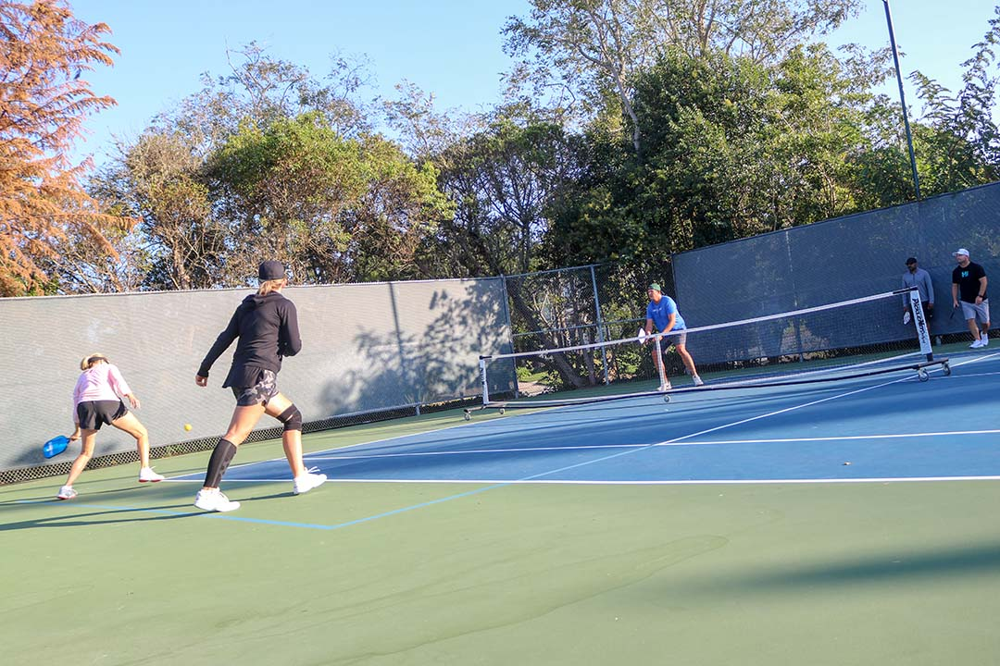
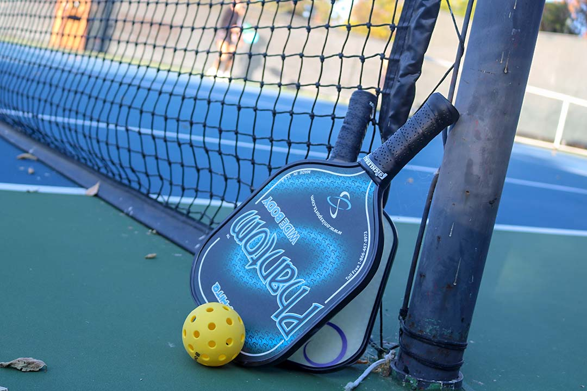
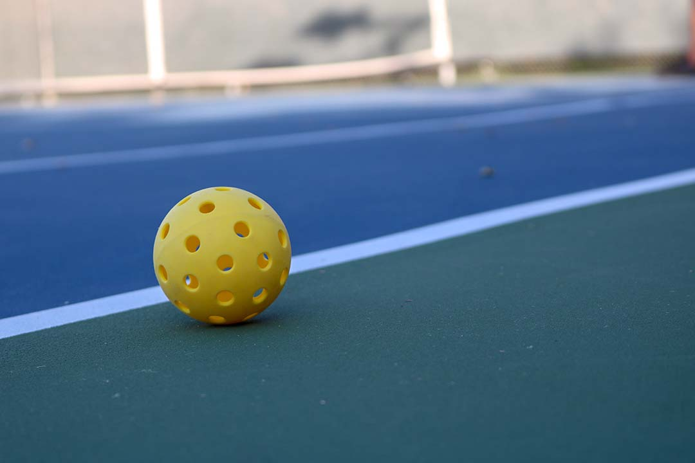
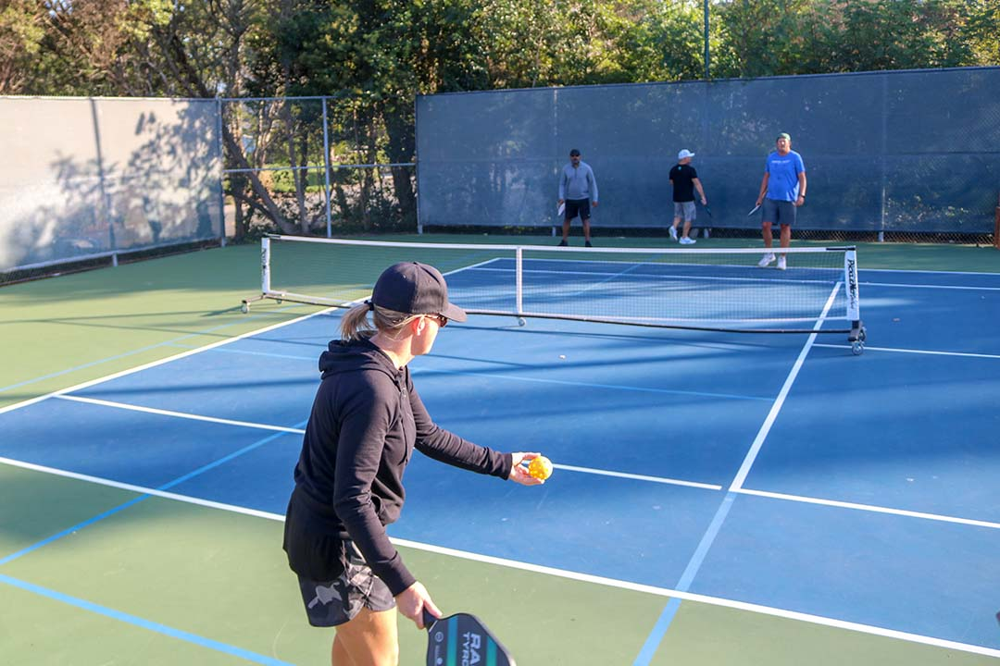
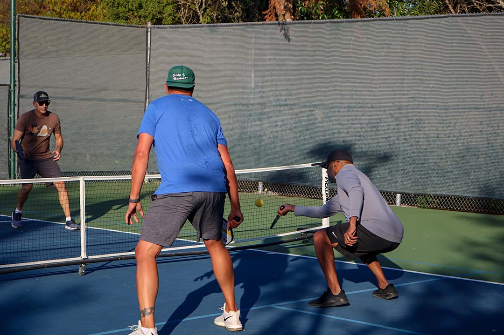
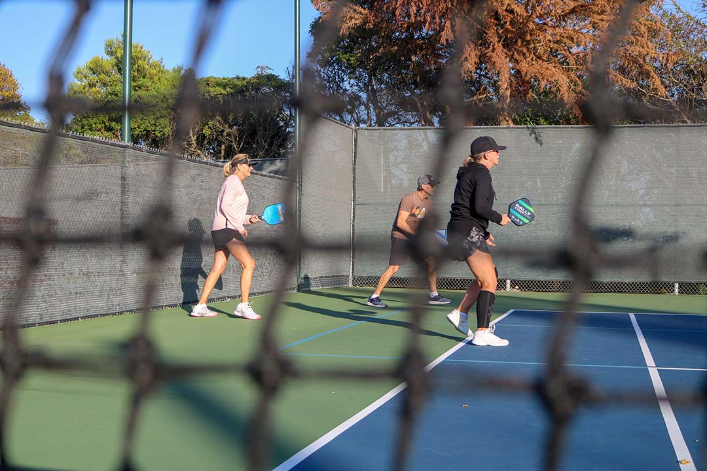
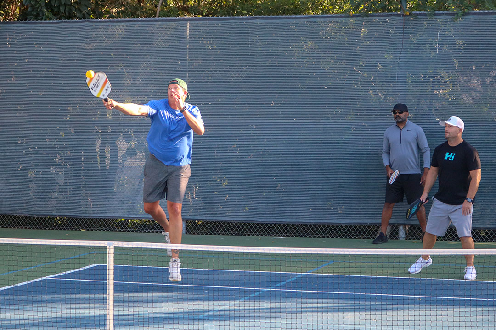
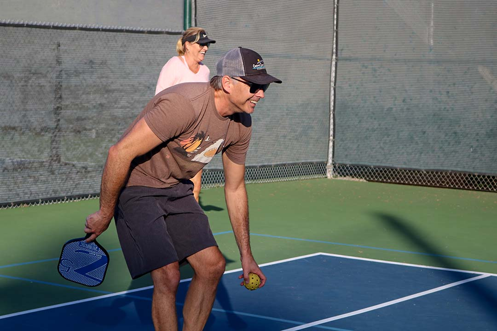
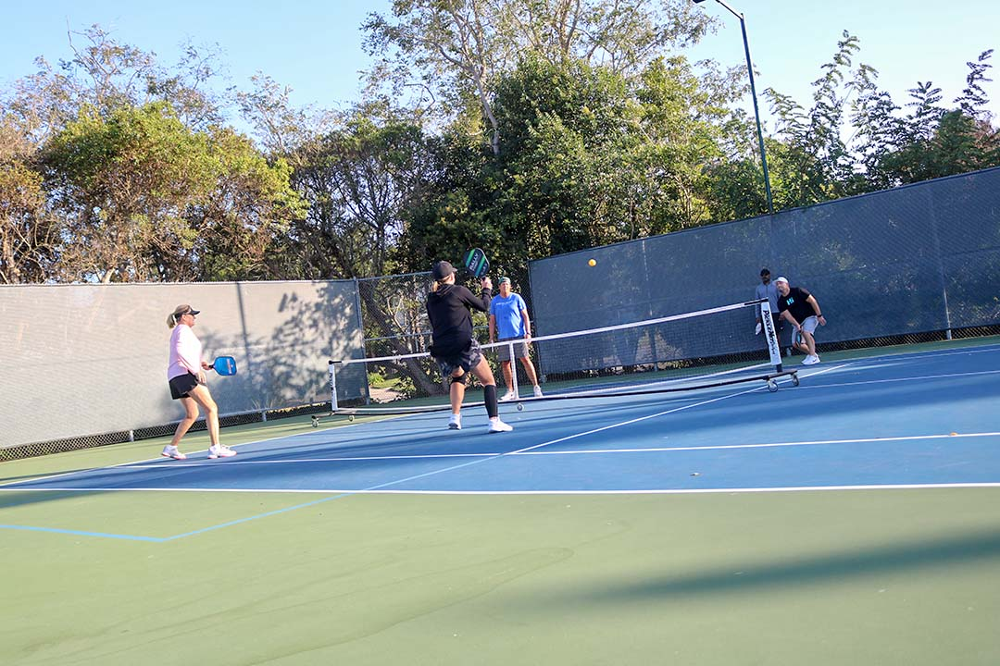
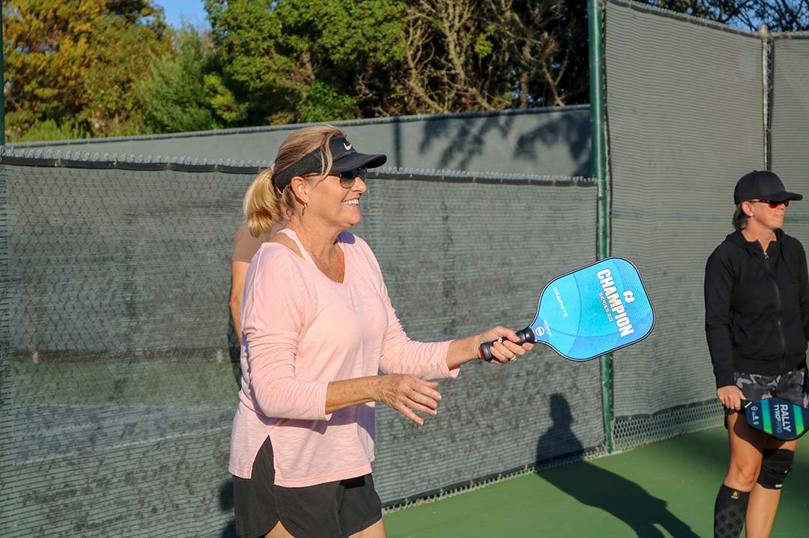

Monday Pickleball Practice
Pickleball Culture in SLO
1 / 10

San Luis Obispo Country Club, Oct. 14, 2019 | The Pickleball wave has hit the central coast. San Luis Obispo Country Club members play pickleball every Monday from 4:30 to 6 p.m. on court 6 at the club.
2 / 10

San Luis Obispo Country Club, Oct. 14, 2019 | Racquets or paddles? Players use these rounded square paddles to hit the ball.
The paddles mimic a ping pong paddle more than a traditional tennis racquet.
3 / 10

San Luis Obispo Country Club, Oct. 14, 2019 | Wiffle balls are the official balls used in a game of pickleball.
4 / 10

San Luis Obispo Country Club, Oct. 14, 2019 | Tennis member, Heidi Gill, gets ready to serve the first ball of the game. Games are played to 11 points.
5 / 10

San Luis Obispo Country Club, Oct. 14, 2019 | Returning the serve can be tough when trying to avoid an area of the court. It is important to be positioned behind the “kitchen” to avoid losing a point. The kitchen is the front area between the net and the blue line that indicates a dead zone area. “You can’t take a ball out of the air in the kitchen, if you do the point goes to your opponent,” Sarah Kreukel said.
6 / 10

San Luis Obispo Country Club, Oct. 14, 2019 | Pickleball can be played with 4 or 6 people. When playing with an extra player it’s called Mortimer. The SLO country club is one of the first to implement this technique into their Monday play day.
7 / 10

San Luis Obispo Country Club, Oct. 14, 2019 | Pickleball requires just as much footwork and movement as tennis. “It’s a quicker more rapid change of direction compared to tennis,” Heidi Gill said. “People are lured in by the smaller court but it’s just an illusion.”
8 / 10

San Luis Obispo Country Club, Oct. 14, 2019 | Luke Colero picks up the ball after being smashed on by his opponent. From the looks of it pickleball isn’t all about competition, it’s also about having fun!
9 / 10

San Luis Obispo Country Club, Oct. 14, 2019 | Heidi charges the net to reach the ball as the final point of the game is played out.
10 / 10

San Luis Obispo Country Club, Oct. 14, 2019 | Jean Kennedy’s team wins! After they finish the game they “pickle poke” instead of high five. A pickle poke is when all of the players on the court tap the ends of their paddles together. “Pickleball is all about having fun with everybody and of course winning,” Kennedy said.
❮
❯